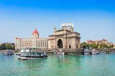

mumbai Indigenous tribals have inhabited Mumbai (Bombay) since the Stone Age.
[1] The Kolis and Aagri (a Marathi-Konkani people)[2] were the earliest known settlers of the islands.
Between the 2nd century BCE and 10th century CE, the islands came under the control of successive indigenous
dynasties: the Satavahanas, Abhiras, Vakatakas, Kalachuris, Konkan Mauryas, Chalukyas, Rashtrakutas,
Silharas & Cholas.
Back